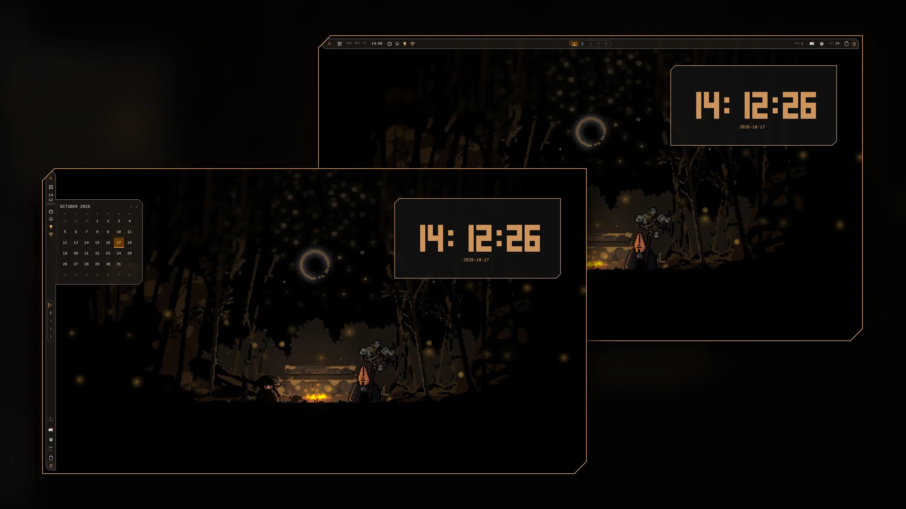
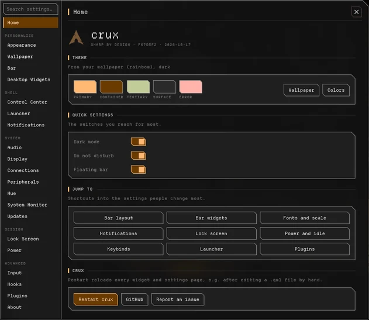

Sharp by design.
A desktop shell for Hyprland, built on Quickshell.
yay -S crux-shell-git

- Bar
- Control Center
- Launcher
- Notifications
- Lock screen
- Wallpaper theming

- 37
- bar widgets
- 20
- settings tabs
- 10
- apps themed from your wallpaper
- 45°
- on every corner
Get crux
For Arch and Hyprland with a Lua config.
yay -S crux-shell-git